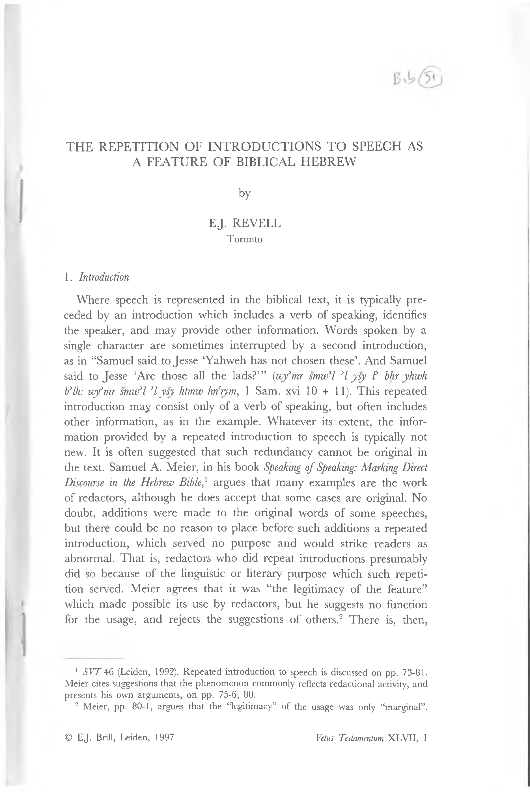

07a.51 The Repetition of Introductions to Speech as a Feature of Biblical Hebrew
THE REPETITION OF INTRODUCTIONS TO SPEECH AS A FEATURE OF BIBLICAL HEBREW
by
EJ. REVELL Toronto
- Introduction
Where speech is represented in the biblical text, it is typically pre ceded by an introduction which includes a verb of speaking, identifies the speaker, and may provide other information. Words spoken by a single character are sometimes interrupted by a second introduction, as in “Samuel said to Jesse 6Yahweh has not chosen these’. And Samuel said to Jesse ‘Are those all the lads?”’ (wy^mr smurf I >1 ysy I bhr yhwh bylh: wy^mr smurf I *lysy htmw hnciym^ 1 Sam. xvi 10 + 11). This repeated introduction may consist only of a verb of speaking, but often includes other information, as in the example. Whatever its extent, the infor mation provided by a repeated introduction to speech is typically not new. It is often suggested that such redundancy cannot be original in the text. Samuel A. Meier, in his book Speaking of Speaking: Marking Direct Discourse in the Hebrew Bible^ argues that many examples are the work of redactors, although he does accept that some cases are original. No doubt, additions were made to the original words of some speeches, but there could be no reason to place before such additions a repeated introduction, which served no purpose and would strike readers as abnormal. That is, redactors who did repeat introductions presumably did so because of the linguistic or literary purpose which such repeti tion served. Meier agrees that it was “the legitimacy of the feature” which made possible its use by redactors, but he suggests no function for the usage, and rejects the suggestions of others.2 There is, then,
1 SVT 46 (Leiden, 1992). Repeated introduction to speech is discussed on pp. 73-81. Meier cites suggestions that the phenomenon commonly reflects redactional activity, and presents his own arguments, on pp. 75-6, 80.
2 Meier, pp. 80-1, argues that the “legitimacy” of the usage was only “marginal”.
© EJ. Brill, Leiden, 1997
Vetus Testamentum XLVII, 1
92
E.J. REVELL
reason to consider the question of function again. Some knowledge of the use and function of repetition is basic to such consideration.
- Repetition as a feature of Biblical Hebrew
6
2.1 Repetition—the avoidable re-statement of the same ideas using (at least in part) the same words—is a common feature of Biblical Hebrew. It cannot have aroused, in the users of that language, the sort of aver sion that it does in speakers of English or other European languages. 3 Repetition is used in many languages, in various forms, and for a vari ety of purposes. A recent discussion of “Repetition in Discourse” states that “The function of repetition in general is to point, to direct a hearer back to something and say, Pay attention to this again. This is still salient; this still has potential meaning; let’s make use of it in some way.’” In other words, the purpose of repetition is, in general, to draw the item repeated to the attention of the hearer or reader, to mark it as significant. The reader or hearer is left to determine the reason why it is so marked. In its description of the uses to which repetition is put, the discussion mentions 66clarification and confirmation”. It also notes that “Repetition is a persuasive device”. In addition, repetition is used for 66text-structuring”: the demarcation of units of text, often with the implication that they stand in a particular relationship to each other. 5 These functions, common to a variety of languages (including English), seem particularly relevant to the understanding of the forms of repeti tion in Biblical Hebrew discussed below.
4
However, the versions rarely provide any significant evidence that a repeated intro duction should be rejected as secondary. The phenomenon clearly was a feature of the texts from which the Greek translation was made, and hence of any Biblical Hebrew of which we have direct evidence.
3 The structure of Semitic languages is conducive to some forms of repetition. There is much relevant to Hebrew in what is said about “morphological repetition” in Barbara Johnstone, Repetition in Arabic Discourse: Paradigms, Syntagms, and the Ecology of Language (Amsterdam and Philadelphia, 1991), pp. 53-75, 109-13.
4 The quotations are from pp. 13, 6, in Barbara Johnstone et al., “Repetition in Dis course: A Dialogue”, in Barbara Johnstone (ed.), Repetition in Discourse: Interdisciplinary Per spectives (Norwood, 1994), vol. 1, pp. 1-20. Vol. 2, pp. 176-98, presents a bibliography of works on repetition, prepared by Barbara Johnstone and Anette Kirk. Wilfred G.E. Watson, Classical Hebrew Poetry: A Guide to its Techniques (Sheffield, 1984), could have been added. Repetition (as distinct from parallelism) in poetry, both in the Bible and else where in the Near East, is discussed there on pp. 274ff.
5 Johnstone et al. may have intended “clarification” to include text-structuring. In any case this is a common function of repetition (even if refrains are not considered). See,
REPETITION OF INTRODUCTIONS
93
2.2 Resumptive repetition
Wording used earlier may be repeated, either in Hebrew or in English, to regain an original line of thought after a digression. A biblical exam ple occurs in Judg. ix 19, where the initial words partially repeat those of ix 16. Shemaryahu Talmon has shown that the use of resumptive repetition of this sort is a standard literary technique in Biblical Hebrew, commonly used in the presentation of events occurring in different loca tions at the same time. The story moves from one location to another, and then returns the reader to the first by using words the same as, or similar to, those at the point at which it left it. The repetition of the words is not intended to suggest that the action described is repeated, or resumed after a pause; both sets of words effectively represent the same event. This fact, important for the topic of this article, is one of a number of features that show that the marking of temporal and log ical sequence was not important to the biblical writers as it is to us, or not important in the same way. Speech or writing cannot avoid pre senting items in sequence. The conclusions which can be drawn from that sequence in our own languages are not necessarily valid for Biblical Hebrew.6
2.3 Envelope structures
The “envelope structure” shows the use of repetition for rhetorical purposes in the speech of biblical characters. In a structure of this sort, the initial words (A) are repeated at the end (A’), enclosing B, mate rial ancillary to the point thus forcefully presented, as in Jer. xxxii 8:
A Please buy my field which is in Anathoth which is in the land of
Benjamin.
B For yours is the right of possession, and yours is the kin-duty. A’ Buy (it) for yourself. (qnh ri’ 3t sdy "sr tfntwt 3sr b'rs bnymyn/ky Ik mspt hyrsh wlk hg3lh/qnh Ik)
e.g., pp. 67-81 in Clive Holes, “The Structure and Function of Parallelism and Repetition in Spoken Arabic: A Sociolinguistic Study”, JSS 40 (1995), pp. 57-81.
6 The original description of resumptive repetition, in Shemaryahu Talmon, “The Presentation of Synchroneity and Simultaneity in Biblical Narrative”, in Joseph Heinemann and Shmuel Werses (ed.), Studies in Hebrew Narrative Art throughout the Ages (Jerusalem, 1978), pp. 9-26, was developed by Burke O. Long, “Framing Repetitions in Biblical Historiography”, JBL 106, (1987), pp. 385-99. Long speaks on p. 399 of “The narra tor’s exercise of freedom from the spatiotemporal constraints of his story world”.
94
E.J. REVELL
A’ is occasionally identical with A, as in 2 Kgs xvii 35-8 (where the initial words are repeated twice). Typically, it differs in some details. A’ is often shorter than A, as in the example, sometimes longer, as in Abraham’s speech in Gen. xviii 23-4. The difference between A and A’ often involves paraphrase, and in a few cases A’ repeats the idea of A with entirely different wording, as in “Do not shed blood . . . Do not raise a hand against him” (7 tspkw dm . . . wyd 3I tslhw bw, Gen. xxxvii 22). That is, repetition in this situation shows a range of varia tion in form similar to that found where the words of one character in the narrative are quoted by another.7 Structures of this sort are com mon in requests and other forms of speech intended to persuade.8
2.4 Simple repetition, with nothing separating the repeated words, is, of course, also used for persuasion. Where the repeated words are sep 9 arated, the intervening B material does not always form an independ ent unit. An example occurs in Ruth iv 6:
A “I am not able to do kin-duty (buying the property) for myself B Lest I ruin the family property. B You do my kin-duty on your own account A’ For I am not able to do (this) kin-duty.” (Z* 3wkl lg3wl ly/pn 3shyt 3t nhlty/g3l Ik 3th 3t g3lty//y I3 3kl lg3l)
Even less clearly structured forms of repetition can be found in per suasive speech. All can be taken as examples of an attempt to persuade through reiteration of the same idea in different forms. Barbara Johnstone sees this type of argument, which she calls “presentation”, as typical of
7 See George W. Savran, Telling and Retelling: Quotation in Biblical Narrative (Bloomington, Indiana, 1988), pp. 29-36. Other typical examples of envelope structures occur in Gen. xvii 19-21, xxiv 6-8, xliii 3-5, 1 17; 1 Sam. iii 17, xix 4-5, xxviii 19; 2 Sam. xi 20-1, xix 12-13; 1 Kgs xx 23-5; 2 Kgs i 13-14, v 18, ix 25-6, xvii 26, xix 32-3; Jer. xxxviii 17; Ruth iv 9-10. Other examples in which the wording of A’ and A is completely different occur in Gen. xxix 25, xl 10-11; 2 Sam. xix 35-6; Ruth iii 13.
8 Cf. lines 10-11 of the Mesad Hashavyahu plea: “(A) All my brothers will speak up for me, (B) those harvesting with me in the heat of the sun. (A’) My brothers will speak up for me” (wkl 3hy fnw ly/hqsrym 3ty bhm hsms/3hy ycnw ly). For analysis of the plea, and a bibliography of earlier studies, see Manfred Weippert, “Die Petition eines Erntarbeiters aus Masad Häsavyähü und die Syntax althebräischer erzählender Prosa”, in Erhard Blum, Christian Macholz und Ekkehard W. Stegemann (ed.), Die Hebräischer Bibel und ihre zweifache Nachgeschicht (Neukirchen, 1990), pp. 449-66.
9 Such repetition adds urgency to a request in Judg. xix 23; 2 Sam. xx 16; and rein forces a disclaimer in 2 Sam. xx 20. (The failure of some versions to represent the rep etition does not justify emendation of the last example.)
REPETITION OF INTRODUCTIONS
95
Arabic usage, and as common (as it certainly is) in Biblical Hebrew.10 The “envelope structure” is simply a particularly clearly structured form of “presentation”. Persuasive language of this type makes use of the basic function of repetition: to draw something to the attention of the addressee, and mark it as significant for the speech. The B component, if used, presents material in relation to which the item repeated is par ticularly significant.11
2.5 The repeated nominal designation of characters
The biblical narrator uses names or other nominals to designate his characters more freely than is usual in English, often using them where a pronoun would not be ambiguous. In terms of participant reference, its basic function, such a nominal is unnecessarily specific. A pronoun would identify the character adequately; the nominal includes infor mation that is not needed for identification. The common function of overspecification of this sort in Biblical Hebrew can be described as “text-structuring”. A nominal is used instead of a possible pronoun where a new idea, or a new phase in the action is introduced, thus marking the beginning of a new “topic unit” or “paragraph”.12 In some cases nominal designations are repeated too frequently for the idea that they introduce “paragraphs” to be reasonable. The purpose is evidently to draw attention to the character so identified in the context in ques tion. The name of God is often used where a pronoun would suffice, as in Judg. ii 15, 18, iii 7, 9, 12, 15, iv 14 and so on; the involvement of God in events is always worthy of particular attention. King David is always designated as “the king” in 1 Kgs i 15-16 (five times), never by a pronoun alone. The two verses introduce the request by Bath sheba which led to the designation of Solomon as David’s successor. This is clearly an event of major importance in the narrative. The
10 (n. 3), pp. 77-96, 11319־. Passages with structure like that in Ruth iv 6 occur in
Gen. xxxiv 203־, xlv 58־; Deut. v 25; 2 Kgs xvii 26.
11 Structures of the envelope type are also used in poetry, and in prose other than speech. They are often considerably more complex than those in speech, and serve different purposes. See Watson (n. 4), pp. 2823־; Sean E. McEvenue, The Narrative Style of the Priestly Writer (Rome, 1971), p. 29.
12 Robert E. Longacre refers to such units as “paragraphs” as do many others. He surveys paragraph types in Joseph: A Story of Divine Providence (Winona Lake, 1989), pp. 602־, and illustrates them in the following chapters. Similar views, also using the term “paragraph” are presented by L.J. de Regt in “Participant Reference in some Biblical Hebrew Texts”, Jaarbericht van het Vooraziatisch-Egyptisch Genootschap “Ex Oriente Lux” 32 (19912־), pp. 15072־.
96
E.J. REVELL
repeated use of the nominal designation draws attention to the part played by David, and to the fact that he played it as “the king”. Such repetition the use of an overly specific designation—attracts attention, and so impresses the identity of the character on the reader in con nection with the context in which it is used.13
2.6 The marking of topic units by the use of a nominal where a pro noun would not be ambiguous is a well-recognized phenomenon. The similar use of redundant nominals to mark a context as important has not been so widely discussed, but is not in doubt. The two phenom ena are not really distinct; they are represented by the use of the same signal in different contexts. The use of a nominal where a pronoun would suffice marks a narrative passage as particularly noteworthy. This may be because some new phase of the action is introduced; it may be because the passage is of particular importance to the narrative for other reasons. This fact, and the others elicited from this survey of forms of repetition, constitute part of the context necessary for the eval uation of the function of repeated introduction to speech.
14
- Repeated introduction to speech
3.1 The following discussion of repeated introduction to speech is based on examples in which speech by one character, introduced with a finite form of the verb “say” ^mr), is interrupted by a second intro duction, also using a finite form of “say”. Where there is a change of addressee, or where the narrator wishes to use cwd or a form of Vysp to show that speech is continuing or renewed, a second introduction must be used to present the new information. Its use is not a matter of choice; such cases are excluded from consideration. Cases in which the interruption to the words of a single speaker includes other narra- torial matter as well as an introduction to speech are similarly excluded. The study concentrates on examples in which the use of a repeated
13 The idea that the repetition of a nominal designation may be used to draw atten tion to important events is suggested by Longacre ([n. 12] pp. 30, 145), and de Regt ([n. 12] pp. 168-70). The ideas covered in this paragraph are presented in greater detail in EJ. Revell, The Designation of the Individual (Kampen, 1996), ch. 4.
14 A binary choice between linguistic items not infrequently has different values in different situations, as in the case of the use of “thou” and “you” in addressing an indi vidual in early modem English. See Peter Muhlhausler and Rom Harre, Pronouns and People: The Linguistic Construction of Social and Personal Identity (Oxford, 1990), p. 152.
REPETITION OF INTRODUCTIONS
97
introduction appears to be a matter of free choice, adding nothing to the information already available. The above are the basic criteria used by Meier in making up the list of examples of repeated introduction to speech which he gives in (n. 1), p. 76.15
3.2 Meier excludes some other categories from his discussion of the phenomenon, but this seems more questionable. He sees the repetition of introductions to the speech of God in Leviticus and Numbers as “an entirely separate issue, since it is not the same phenomenon as God’s speech in narrative but functions as a structuring device for distinct cultic and legislative topics” ([n. 1] p. 74, n. 1). This is a correct eval uation of the function of these introductions, but it is not clear that this makes their use “an entirely separate issue”. The “cultic and leg islative topics” presented in Leviticus and Numbers are presented as speech within a framework of narrative, however exiguous. The forms of introduction used are not unique to those books; some examples fit the criteria outlined above, e.g. Num. xviii 26 + 30, xxviii 2 + 3. The introduction “Thus has Yahweh said” (kh >mr yhwh}, which Meier also excludes, is used for text-structuring by the prophets. Examples of repeated introductions used for this purpose can also be found else where, as those separating the successive sections of the “Blessing of Moses”. It seems clear that text-structuring is a characteristic function
16
17
15 Figures preceded by “+” represent introductions repeated within the words of one speaker. The possible example in Exod. iii 15 includes cwd, and so is omitted. The par allel cases in 2 Kgs xx 19 and Isa. xxxix 8 are listed separately. The speeches are not identical, and so it is reasonable to argue that the repeated introduction is used in both through deliberate choice, not through mechanical reproduction of one passage in the other. Gen. i 28 + 29, ix 1 + 8 + 12 + 17, 25 + 26, xv 2 + 3, 5 + 5, xvi 9 + 10 + 11, xvii 3 + 9 + 15, xviii 17 + 20, xix 9 + 9, xx 9 + 10, xxi 6 + 7, xxiv 24 + 25, xxvii 36 + 36, xxviii 16 417 ־, xxx 27 428 ־, xxxi 48 4- 51, xxxvii 21 + 22, xli 39 + 41, xlii 1 42 ־, xlvii 3 4-4; Exod. iii 5 415 -4 14 -4 14 ,6 ־, iv 4 + 6, v 4 + 5, vi 1 + 2, xxxiii 19 4- 20 421 ־ + xxxiv 1, xxxiv 10 427 ־, xxxv 1 44 ־; Num. xxvii 6 4- 12, xxxii 2 + 5; Deut. ix 12 + 13, xxxiii 7 + 8 + 12 + 13 + 18 + 20 + 22 + 23 + 24; Josh, iii 9 + 10, ix 19 + 21; Judg. viii 23 + 24, xi 36 + 37, xix 12 + 13; 1 Sam. xiv 33 + 34, xvi 10 + 11, xvii 8 + 10, 34 + 37, xxvi 9 + 10, 17 + 18; 2 Sam. xv 3 + 4, 25 + 27, xvii 7 + 8; 1 Kgs ii 13 + 14, 42 + 44, iii 23 + 24, xxii 4 + 5; 2 Kgs iii 7 + 8, vi 27 + 28, xx 19 + 19; Isa. xxxix 8 + 8; Jer. xi 6 + 9, xxxvii 17 + 17, xliv 20 + 24; Ezek. iii 4 + 10, iv 15 + 16, viii 12 + 13; Zech, v 6 + 6; Ruth ii 20 + 20, iii 14 + 15.
16 This is made clear in commentaries concerned with the received form of the text, such as Moshe Greenberg, Ezekiel 1-20: A New Translation with Introduction and Commentary (Garden City, New York, 1983).
17 Deut. xxxiii 7-24. Meier includes this in his list of examples, although it is debat able whether the names used in the successive introductions represent the topic of the following speech or its addressee, since second-person pronouns rather than third are
98
E.J. REVELL
of repeated introduction to speech in the Bible. It is indeed strange that this does not figure among the “approaches taken to explain this curiosity” surveyed by Meier ([n. 1] pp. 75ff.). Meier also excludes examples in which no finite form of f3mr is used, but it is difficult to see a reason for this. For instance, “She had sent to her father-in-law saying ‘By the man to whom these belong am I pregnant.’ And she said ‘Recognize, please, to whom this seal, (its) cords, and the staff belong’” [why3 slhh 3I hmyh l3mr Pys 3sr 3lh Iw 3n/y hrh wt3mr hkr n3 Imy hhtmt whptylym whmth h3lh, Gen. xxxviii 25) shows the interruption of the words of one speaker on a single topic by a second introduction just as do other examples in the list.
3.3 The examples of repeated introduction to speech excluded by Meier certainly differ formally from those he does list. It is not clear that they differ in function, and the formal differences may well arise from factors irrelevant to the function of the repeated introduction. That this is the case is suggested by the fact that the list includes exam ples which could technically be excluded, as Gen. xvii 3, xxviii 17; Exod. iv 6. Nevertheless, Meier’s list provides a clearly defined set of exam ples, adequate for the investigation of the phenomenon, so the follow ing discussion is based on this list, although other examples are also taken into consideration. The translations of the examples are intended to reflect the Hebrew rather than to present the best English equiva lent to it, since more sophisticated renderings are easily available.
- The form of the repeated introduction
4.1 A repeated introduction to speech often includes a nominal sub ject representing the speaker (S), and a nominal or pronoun repre senting the addressee (A) in addition to V, the characteristic repetition of a finite form of the verb “say” (f3mr}. The form of an initial intro duction to a speech is determined by its relationship to the preceding narrative, but the form of a repeated introduction must be determined by its function within the speech, as with introductions to the succes
often used in the following speeches. The speech of Moses begins in Deut. xxxiii 2, but the use of his name and the first-person pronoun in xxxiii 4 raise questions about its attribution. The problems of variation in the person and number of pronouns, and of a speaker’s use of his own name, are too complex for discussion here. Some aspects are discussed in Revell (n. 13), chs 18, 27.
REPETITION OF INTRODUCTIONS
99
sive speeches in a dialogue, a similar situation discussed in Longacre (n. 12), ch. 7. The following table represents the use of components in repeated introductions in relation to the initial component:18
Initial introduction
V+S+A V+S V+A V
34 (38) 8 (8) 8 (8) 13 (22)
Repeated introduction Same
V+S+A
V+S
V+A
23 3 7 17
[] 1 — 3
8 [] 1 2
1
[]
V
6 4 —
UI
Other verbs precede the form of yPmr in at least eight initial introductions, in two repeated introductions.19
This survey shows that repeated introductions are most likely to include the same components as the initial introduction. Otherwise, they vary much as do introductions to successive speeches in a dialogue. Where the same components are not used, the repeated introduction usually provides less information than the initial one, occasionally more, as with other sorts of repetition.
4.2 Where an introduction to speech is repeated, a nominal designa tion of the speaker is included in the second introduction in 41 of the 76 cases. In “And he said to his servant” (wy'mr Irfrw, Judg. xix 13) the nominal identifying the addressee perforce also identifies the speaker. Where neither speaker nor addressee is represented by a nominal, the speaker is sometimes identified through the pronoun in the verb form, as in “She said to him” (wt’mr Uyw, Gen. xxiv 25). Where the pro noun in the introductory verb of speaking might represent either mem ber of the dyad, the content of the speech in its context usually shows
20
18 The table is limited to the 63 passages containing 76 examples of repeated intro duction given in n. 15. The figures in parentheses in the “initial introduction” column represent the repeated introductions in each category. The cases in Deuteronomy xxxiii are included in the “V” rank.
19 Other verbs occur in a repeated introduction in Gen. xxviii 17; Exod. vi 2, and in an initial introduction in Gen. i 28, ix 1, xx 9, xxviii 16; Exod. xxxv 1; Num. xxxii 2; 1 Sam. xvii 8; 1 Kgs ii 42. Gen. xv 5, xxxvii 21 might be added, depending on how the limits of an “introduction” are defined.
20 A verb of speaking inevitably represents the speaker, either through a pronominal morph in the verb form, or through the contrastive absence of one. Longacre treats a verb of speaking with no nominal or independent pronoun as subject as showing “nul
100
E.J. REVELL
who is speaking, as where David replies to King Saul: “And David said ‘(It is) my voice, my lord the king’. And he said ‘Why is it that my lord is chasing after his servant?”’ {wy3mr dwd qwly 3 dry hmlk: wy3mr Imh zh "dny rdp 3hry cbdw, 1 Sam. xxvi 17 + 18).21 Among the examples listed, the identity of the speaker after a second introduction is really uncertain only in 2 Kgs iii 7 + 8. The preceding context and the intro duction to the initial speech in 2 Kgs iii 7 clearly identify the speaker there (the king of Israel) and the addressee (the king of Judah). This speech is followed by three others, each of which is introduced only by “And he said” (wy3mr). The only significant reason for assuming that the first two of these three are spoken by the king of Judah is the sim ilar passage in 1 Kgs xxii 4-5, where the initial speech by the king of Israel is followed by two speeches, with the king of Judah named as speaker in the introduction to both. The second of the two makes the request “Please enquire of the word of Yahweh today” (drs n3 kywm 3t dbryhwh, 1 Kgs xxii 5). This represents a theme important to the nar rator: the unwillingness of the king of Israel to recognize the prophets of Yahweh. Consequently, it is important to show clearly that it is the king of Judah who suggests consulting Yahweh. The story in 2 Kgs iii includes the same theme, but this is not introduced until verse 11. After the first speech, the identity of the speakers in verses 7-8 is of no impor tance to the narrative. There is no good reason to assume that the speakers do not alternate in the usual way.22
reference” to the speaker ([n. 12] p. 162), and uses zero to symbolize both this “nul reference”, and the absence of a pronominal morph in other situations. This presum ably reflects the view that the subject morph in a verb form is “empty”. (See Edit Doron, “On the complementarity of Subject and Subject-Verb Agreement”, in Agreement in Natural Language: Approaches, Theories, Descriptions, Center for the Study of Language and Information, Stanford University [1988], pp. 201-18.) Whatever value this view may have for the “universals” of linguistic theory, it is misleading as a description of Biblical Hebrew usage. The speaker is quite as clearly specified in the verb form wy'mr “and he said” as is the addressee in the adverbial Iw “to him”. The traditional use of the term “pronoun” for the anaphoric element in both is retained here.
21 The pronoun in the repeated verb of speech identifies the speaker in Gen. xix 9, xlii 1 + 2; 1 Kgs ii 13 + 14; Ezek. iii 4 + 10, iv 15 + 16, viii 12 + 13; Zech, v 6; Ruth iii 14 415 ־, and, where this identification is complemented by a nominal des ignation of the addressee, Gen. xlvii 3 + 4; Judg. xi 36 + 37. Gen. xxxviii 25 would provide a further example. Other examples in which the speaker is identified by the content of the speech occur in Gen. xv 5, xxvii 36, xxx 27 + 28; Exod. iii 5 + 6, iii 14, xxxiii 19 + 20; Num. xxxii 2 + 5; 2 Kgs xx 19 = Isa. xxxix 8; Jer. xxxvii 17.
22 See the comment in James A. Montgomery, (ed. H.S. Gehman), A Critical and Exegetical Commentary on the Books of Kings (Edinburgh, 1951), p. 360: “Nb. the change of loquiturs without naming the subjects after good Semitic fashion.” Most commentators do not identify the speakers.
REPETITION OF INTRODUCTIONS
101
4.3 Where reciprocal action is presented, the narrator, after showing who acts first, often relies on the reader’s understanding of the context to show who performs each subsequent act, and this is particularly common where the action is speaking. When one speech is followed by an introduction to another in which either the speaker of the first speech or its addressee could be subject of the verb of speaking, the natural assumption is that the speaker of the second speech was the addressee of the first. The decision that the first speaker is speaking again is only made where this default assumption is shown to be unten able. This may occur where the introduction to the first speech does not indicate an addressee, as occurs in Gen. ix 25 + 26, xxi 6 + 7, xxviii 16+17 (also the cases in Deut. xxxiii, that in Deut. xxix 23-4, and that in Gen. xviii 17 + 20, where the speaker is named in the repeated introduction). Where an addressee is designated in the intro duction to the first speech, the reader must be given adequate indica tion that the speaker of the first speech is also responsible for the sec ond if he is expected to recognize this. This is the reason for the high proportion of repeated introductions which include a nominal referring to the speaker, as compared to introductions to the alternating speeches in a dialogue. The addressee is represented in a repeated introduction in 35 cases, 15 times by a pronoun, 20 by a nominal. The speaker is also represented by a nominal in all but two of the latter, confirming the importance of the speaker’s identity. Reference either to the speaker or to the addressee is not possible unless a verb is used. The verbal component of a repeated introduction appears alone, without nominal reference to the speaker, or any reference to the addressee, in only 27 cases. It rarely includes any more than a finite form of ypmr. Clearly, the most significant component of a repeated introduction is not the verb, but the reference to the speaker (and sometimes the addressee) which it supports. A repeated introduction to speech should not be seen as a repeated verb of speaking, to which other items are some times added. It should rather be regarded as a repeated attribution of speech. It is another form of the redundant reference to an important character which is exemplified by the use of overly specific nominal designations discussed above. The repetition of an introduction to speech
23
23 Where the addressee is represented by a relationship term (“her father”, Judg. xi 37; “his servant”, Judg. xix 13), no nominal is used to represent the speaker. The rela tionship term reflects the speaker’s viewpoint, showing that here too the narrator’s atten tion is focussed on the speaker, not the addressee. See Revell (n. 13), §§ 4.3.2, 13.3.2.
102
E.J. REVELL
impresses the identity of the speaker (and sometimes also of the addressee) on the reader’s attention in association with the speech.
- The speeches introduced
5.1 The repetition of an introduction to speech within the words of a single speaker presents those words as two speeches. The relation ship between the two may be assigned to one of three categories. The second speech may not be directly related to the first; it may be depend ent on the first, complementing it in some way; it may reconfirm the first by some form of repetition. As is usual with classification based on meaning, the boundaries between these categories, and between the subdivisions within them, are not distinct. The classification is intended only to facilitate description.
5.2 Group I: the second speech is not directly related to the first
In the largest group of examples in this category, the first speech responds to a previous speech by the addressee; the second presents some concern of the speaker, as in “She said to him 6Do you come in peace?’ And he said ‘(Yes,) in peace’. And he said ‘I have a word (to say) to you’” (wt’mr hslwm bT wy^mr slwm: wy^mr dbr ly ’lyk, 1 Kgs ii 13 + 14). In a few cases, the speaker is shown as responding to a sit uation rather than to a speech presented in the text, as when Absalom comments on the case of his addressee in 2 Sam. xv 3 + 4, or when David commands that the ark be returned to Jerusalem in 2 Sam. xv 25 + 27.24 In a number of cases, the examples represent two separate responses to a previous speech. In some cases these can be seen as two units in a train of thought, as in “He said ‘Is there a word from Yahweh?’ And Jeremiah said ‘There is’. And he said ‘You will be given into the hand of the king of Babylon’” (wy’mr hys dbr m't yhwh wy'mr yrmyhw ys wy’mr byd mlk bbl tntn, Jer. xxxvii 17). In this group, too, the first speech may be shown as responding to a situation, rather than to actual words, as in 1 Sam. xvi 10 + 11 (quoted in § 1.1), where Samuel
24 Other examples in which the first speech responds to another, and the second rep resents the speaker’s own initiative, occur in Gen. xlvii 3 + 4; Num. xxvii 6 + 12; Judg. viii 23 + 24, xi 36 + 37; 1 Sam. xiv 33 + 34, xxvi 17 + 18; 1 Kgs xxii 4 + 5; 2 Kgs xx 19 = Isa. xxxix 8; Ezek. iii 4 + 10, iv 15 + 16; Ruth ii 20. 2 Kgs iii 7 + 8 belong here if this is considered a case of repeated introduction. 2 Sam. xxiv 22 + 23 would provide a further example.
REPETITION OF INTRODUCTIONS
103
tells Jesse that God has not chosen any of the sons he has presented.25 In a third group, the two speeches represent separate concerns of the speaker, not clearly both responding to the same stimulus. They may represent units in a train of thought, or they may have no obvious connection, as in “He said ‘Let it not be known that a woman has come to the threshing-floor.’ And he said ‘Hold out the cloak which is on you . . (wy"mr "lywdc ky b"h h"sh hgm: wy"mr hby hmtpht "sr clyk. . ., Ruth iii 14 + 15).26
5.3 Group II: the second speech complements the first
In the examples assigned to group II, the second speech depends on the first in some way. In most cases, the first speech describes a situ ation, and the second presents a response to that situation, a question, request, prediction, decision, or conclusion arising from it, as in “The king said ‘The one says . . the other says . . .’ And the king said ‘Get me a sword’” (wy"mr hmlk z^t "mrt. . . wz^t "mrt. . .: wy"mr hmlk qhw ly hrb, 1 Kgs iii 23 + 24). In “All the nations will say ‘Why did Yahweh do thus to this land . . .’ And they will say ‘Because they forsook the covenant of Yahweh God of their fathers . . .’ (w"mrw kl hgaym cl mh csh yhwh kkh l"rs hz?t. . .: w"mrw cl "sr czbw "t byt yhwh "Ihy "btm . . ., Deut. xxix 23-4, not in the list), the second speech is a response to the rhetor ical question in the first, not to the situation it describes. In a few cases, the first speech can be considered simply introductory, as in “He said ‘Look, please, to the heavens, and count the stars, if you can count them.’ And he said to him ‘Thus will be your seed’” (wy"mr hbt n" hsmymh wspr hkwkbym "m twkl Ispr "tm wy"mr Iw kh yhyh zr‘k, Gen. xv 5).27
25 Other examples in which both speeches are responses to the same stimulus occur in Gen. xix 9, xxi 6 + 7, xxiv 24 + 25, xxxi 48 + 51; Exod. iii 14; Deut. ix 12 + 13; 2 Sam. xvii 7 + 8; 2 Kgs vi 27 + 28; Zech, v 6. Num. xviii 26 + 30, xxviii 2 + 3, provide further examples.
26 It is not certain that both speeches are addressed to Ruth, but this can be assumed on the grounds that no change of addressee is indicated. Other examples in this group occur in Gen. i 28 + 29, ix 1 + 8 + 12, xvi 9 + 10 + 11, xvii 3 + 9 + 15, xviii 17 + 20; Exod. iii 5 + 6, iv 4 + 6, xxxiii 21 + xxxiv 1, xxxv 1 + 4; Deut. xxxiii (8 cases). Exod. vii 26 + viii 1 would provide a further example.
27 Other examples assigned to group II occur in Gen. xlii 1 + 2; Josh, iii 9+10; Ezek. viii 12 + 13, where the first speech is simply introductory, and in Gen. xx 9 + 10, xxvii 36, xxx 27 + 28; Exod. iii 14 + 15, vi 1 +2, xxxiii 19 + 20 + 21; Num. xxxii 2 + 5; 1 Sam. xvii 34 + 37; 1 Kgs ii 42 + 44; Jer. xi 6 + 9, xliv 20 + 24. Tamar’s speech in Gen. xxxviii 25 would provide a further example.
104
E.J. REVELL
5.4 Group III: the second speech reconfirms the first
In the examples in group III, the second speech repeats or para phrases the content of the first, or part of it, exemplifying persuasive language of the type called “presentation” by Johnstone (see § 2.4). The second speech expands a part of the first in “His master said to him ‘We won’t go to a city of strangers . . .; let us go on as far as Gibeah’. And he said to his servant ‘Come, let us approach some (other) place. We will spend the night in Gibeah or Ramah’” (wy^mr Uyw >dnyw ! nswr 31 cyr nkry . . . wcbmw cd gbch: wy^mr Irfrw Ik wnqrbh bfid hmqmwt wlnw bgbch "w brmh, Judg. xix 12 + 13). The second speech summarizes the content of the more diffuse challenge in the preceding verses in “The Philistine said ‘I have contemned the ranks of Israel this day. Give me a man and let us fight together’” (wy^mr hplsty ^ny hrpty U m'rkwt ysf I hywm hzh tnw ly js wnlhmh yhj 1 Sam. xvii 10). The second speech in Jos. ix 21 consists only of “They should live” (yhyw, repeating the essence of the decision presented, along with its background, in verses 19-20. Other examples of such repetition occur in Gen. xv 2 + 3, xxviii 16+17, xxxvii 21 + 22, xli 39 + 41. In a few cases, an introduction is repeated within a speech which forms a structure of the envelope type, as in “The king of Egypt said to them (A) ‘Why, Moses and Aaron, do you release the people from their work? Go to your labours!’ And Pharaoh said (B) ‘Look, the people of the land are now many, (A’) and you have made them cease their labours’” (wy'mr Uhm mlk msrym Imh msh w^hm tpycw U him mm'syw Ikw Isbltykm: wy^mr prch hn rbym cth cm hUs whsbtm Um msbltm, Exod. v 4 + 5).28
- The junction of repeated introduction to speech
6.1 Repetition of an introduction to speech inevitably includes a pro noun representing the speaker, which contrasts with zero: the lack of renewed identification of the speaker which is the norm within a speech. The repetition frequently includes a nominal designation of the speaker, which draws the identity of the speaker more forcefully to the reader’s attention. The repetition of a verb is required for repeated reference
28 Other examples occur in Gen. ix 12 + 17; Exod. xxxiv 10 + 27, also in 1 Sam xxvi 9+10, where the second speech continues with a new topic, introduced by “under these circumstances” (uftty, and in Gen. ix 25 + 26, where the A’ clause is presented after each of the two sections of B material. 2 Sam. xvi 10+ 11 would provide a fur ther example.
REPETITION OF INTRODUCTIONS
105
to the speaker in either of these forms. Given that repetition of the verb is required, the type of verb, a verb of speaking, is not a matter of choice, and so is unlikely, in itself, to carry any particular significance. The main function of the repetition is, then, to draw attention to the identity of the speaker in connection with the words presented, as was concluded above. It is reasonable to suggest that, like the more com mon forms of overspecified designation, this may be intended to mark the beginning of a new topic unit, a new section of the speech, or it may show that those words of that speaker deserve particular attention for other reasons. That is, its function may be text-structuring, or high lighting for other reasons. As is usual with such signals, the basic func tion is clear; the intent of any particular example is left to be determined by the reader.
29
6.2 There is no difficulty in seeing text-structuring as the function of the repeated introductions in group I. The repeated introduction marks the beginning of a unit of a speech which clearly deals with a topic different from that of the preceding. Text-structuring of this sort is the predominant function of other forms of overspecific designation, and so it is no surprise that over half the examples in Meier’s list belong in this group. In group II, the second speech is typically more significant for speaker and addressee, and so for the narrative, than the first. The function of the repeated introduction is thus easily understood as the highlighting of the second speech as complement to the first. Repetition of the content of a speech, characteristic of group III, reinforces the message presented, a form of argument characteristic of Hebrew and Arabic speakers. The repetition of the introduction to a speech high lights the repetition of its content, and so increases this reinforcement. Where the speech has the form of an envelope structure, the repeated introduction may be placed after the B component, thus highlighting A’, the repetition of the essential message contained in the A compo nent. In Gen. ix 12 + 17; Exod. xxxiv 10 + 27, where this occurs, the A component functions virtually as a title presenting the nature or pur pose of the relatively long B component, and its repetition in A’ under lines the importance of this information. The repeated introduction may
29 If the speech of God in Leviticus and Numbers, and other categories excluded from Meier’s list were taken into consideration, the proportion of repeated introduc tions to speech used for text-structuring would be much more similar to that of other overspecific designations used for this purpose.
106
E.J. REVELL
be placed after the A component of an envelope structure, highlight ing the B and A’ components together. In Exod. v 4 + 5, quoted in § 4.4, the repeated introduction highlights the reason for the essential message, along with the repetition of it. In 2 Sam. xvi 11, the B com ponent shows David’s state of mind, the psychological background essential to the understanding of the speech repeated as A’. Similar explanations can be applied to the examples in Gen. ix 25 + 26 and 1 Sam. xxvi 9+10. Thus the way that the repeated introduction is used in all three groups is consistent with the suggestion that its repe tition is intended to draw attention to the material it introduces.
6.3 The forms of introduction to speech excluded from Meier’s list are used in much the same way as those just described. The most com mon function is text-structuring, as pointed out above. The prophetic formula “Thus has Yahweh said” (kh "mr yhwh) may also be repeated to highlight communications related to each other as are those in the examples in group II, as in “Thus has Yahweh said: ‘A voice is heard in Ramah, lamentation and bitter weeping . . .’ Thus has Yahweh said: ‘Restrain your voice from weeping, and your eyes from tears . ..’” (kh *mr yhwh qwl brmh nsmc nhy bly tmrwrym . . .: kh ’mr yhwh mncy qwlk mb/y wcynyk mdmch . . ., Jer. xxxi 15 + 16). Examples can also be found of its repetition before a communication which summarizes, or otherwise repeats, the preceding one (as in group III), as in “Thus has Yahweh said: ‘The inhabitants of this city will die by the sword, by famine, or by plague . . .’ Thus has Yahweh said: ‘This city will certainly be given into the hand of the king of Babylon, and he will capture it’” (kh "mr yhwh hysb bcyr h^tymwt bhrb brcb wbdbr. . .: kh >mr yhwh hntn tntn hcyr h^t byd hyl mlk bbl wlkdh, Jer. xxxviii 2 + 3). Other less common forms of attribution are sometimes repeated in situations characteristic of group II, as is “Saying of Yahweh” (n^m yhwh) in 1 Sam. ii 30, or “Hear the word of Yahweh” (smcw dbr yhwh) in Jer. xliv 24-6. The repetition of these prophetic formulae can thus easily be related to the repetition of introductions to speech in general, although factors other than simple highlighting no doubt provided the main motivation for their use. 31
30
30 Other examples of repetition used for highlighting of this sort occur in 2 Kgs iii 6+17, xix 20 + 32; Jer. xxxi 35 + 37, xxxvi 29 + 30. Also in 1 Kgs xxi 19, where a repeated introduction to speech supports the repetition of the prophetic formula (in the Hebrew text at least). The importance, for the narrator, of the prophecy so high lighted is shown by its being recalled in 1 Kgs xxii 38; 2 Kgs ix 25-6.
31 The repetition of other features may have a similar highlighting function. In 1 Kgs
REPETITION OF INTRODUCTIONS
107
- Additional considerations
7.1 Biblical narrative shows a tendency to treat events in which different groups of characters are involved as separate units. The narrator tends to finish his treatment of events involving one group before beginning to treat those involving another, even where the two sets of events are closely related. Thus, for instance, the description of the activities of the priests of Baal on Mount Carmel (1 Kgs xviii 26-9) is completed before the description of Elijah’s repair of the altar is begun (xviii 30-2), even though they went on at the same time, and both finished at the time of the minhd (xviii 29, 36). The cohesion of the acts described is more important to the narrator than the temporal relationship of the event they constitute to other events. Such usage could be said to be due to the lack of adverbs with values such as “meanwhile” in Hebrew. On the other hand, the fact that the technique of resumptive repeti tion was developed to deal with such situations, rather than a set of adverbs, suggests a habit of mind which typically saw events in terms of separate scenes or topic units. This habit of mind may also be reflected in the tendency to divide a speech into a set of topic units by repeating the attribution to the speaker.
In a relatively small proportion of cases, it seems evident that the 7.2 need to demarcate topic units could not justify the repetition of an at tribution of speech. Here, the reader is left to determine from the con text why attention is drawn to what follows by the repetition of the attribution. Interpretation of such highlighting can only be speculative, but reasons for it are rarely difficult to suggest. Thus in Gen. xxxviii 25 (quoted in § 3.2), the first part of Tamar’s speech suggests that she is admitting the charge against her, and intending to name her lover, but the second part challenges Judah to admit his role in the events. The reader knows what has occurred, but the expectations of Judah and his associates are dramatically reversed by the second part of Tamar’s speech. The repetition of “and she said” between the two parts invites the reader to pay particular attention to the second, to relish its implications in the context, and so enhances its impact.
ii 4, “saying” (fmr) is used before both protasis and apodosis of a condition, apparently to draw attention to the apodosis as the more significant part of the speech. The rela tion to repeated introduction with a verb (and the weakness of the versional support for emendation) is noted in Montgomery-Gehman (n. 22), p. 98. ky is sometimes simi larly repeated, as in 1 Sam. xiv 39, xxv 34; 2 Sam. ii 27 (after an oath formula) and 2 Sam. xix 7 (after the verb “know”).
108
E.J. REVELL
7.3 Commentaries and translations show that a repeated introduction is often interpreted as implying a lapse of time or change of situation between the two speeches. Such interpretation is often suitable. The dramatic impact of Tamar’s words is increased if her first speech is seen as transmitted by a messenger, as the verb “she sent” (slhh, Gen. xxxviii 25) suggests, and the second as delivered face to face with Judah (the fact that Judah’s response is not said to be addressed to Tamar does not necessarily indicate that she is not present). On the other hand, the view that a repeated attribution implies some hiatus between the speeches is not always plausible. In any case, the question whether 32 or no a hiatus occurred in any given case can scarcely be important. The means are available to show unequivocally that the two speeches took place at different times, or in different situations, should the nar rator’s purpose require this. Where such details are not given, the reader is at liberty to construct the context of the speech within the limits allowed by the information which is provided. The narrator points out the dramatic potential of Tamar’s speech, but leaves its precise cir cumstances to the imagination of the reader.
If the function of repeated introduction to speech is indicated by 7.4 the context in which it is used, it is reasonable to ask why it may appear only in one of several similar situations, as does Meier ([n. 1] p. 77). While the question is of interest, the assumption that all simi lar situations should be treated in the same way is not more valid here than with other questions of usage, such as why a form of “ask” is not used in the introduction to all questions, or a form of Vcnh “an swer” with all responses. Different treatment nuances similar passages in different ways. The highlighting provided by a repeated introduc tion to speech may not be required in all similar cases; few situations
32 A range of examples is offered in support of the view that the repetition of an introduction to speech always implies a pause between the two speeches in Shimon Bar- Efrat, Narrative Art in the Bible (Sheffield, 1989), pp. 43-4. The article by Meier Shiloah, “And he said . . . And he said” (Hebrew), in Sefer Korngreen (Tel Aviv, 1964), pp. 251-67, is cited as authority for this, but Meier’s discussion of that article ([n. 1] pp. 77-9) shows the difficulty of maintaining the view in all cases. P. Kyle McCarter translates the verb in a repeated introduction to speech as “continued” in 1 Sam. xvii 10, “went on” in 1 Sam. xxvi 10 (/ Samuel: A New Translation with Introduction, Notes and Commentary [Garden City, New York, 1980], pp. 284, 403). Other cases where the second speech is easily interpreted as following the first directly occur in 1 Sam. xxvi 17 + 18; 1 Kgs ii 43 + 44; Jer. xxxvii 17.
REPETITION OF INTRODUCTIONS
109
are identical.33 Alternatively, the highlighting may have been supplied in some other way; it cannot be expected that a writer will always use the same means of ensuring the reader’s attention.
34
7.5 The argument that an introduction is repeated to draw attention to the following speech is a reasonable explanation for its use even in the cases which grate most on the modern ear, such as that in Gen. xvi 9 + 10 + 11, where “The angel of Yahweh said to her” is used to introduce a speech in three successive verses. The speech in each verse is important considered in isolation, justifying the use of repeated intro ductions to highlight the second and third. That is, all the examples of repeated introduction to speech surveyed can be seen fulfilling a spe cific function in a way consistent with other features of Biblical Hebrew usage. This fact is emphasized by comparison with “And Micaiah said ‘If you do return in peace, Yahweh has not spoken through me’. And he said ‘Hear peoples all’” (wy’mr mykyhw "m swb tswb bslwm P dbryhwh by wy’mr smcw cmym klm, 1 Kgs xxii 28). It is widely considered that the second speech (the words of which are also found in Mic. i 2) is by the prophet Micaiah as well as the first. It is seen as a gloss intended to show either that Micaiah is the same person as the Prophet Micah, or that their ideas were related. If so, the introductory verb acts as a form of repeated introduction to speech. However, if the intended meaning of the verb is something like “This is the man who said”, or “Cf. the later speech” (as this view would suggest), the choice of a nar rative (^^-consecutive imperfect) verb form represents highly unusual
35
33 This explanation can be applied to Ezek. viii 6, 12 + 13, 15, of which Meier raises this question ([n. 1] p. 77). The three passages have a common framework, but differ considerably in detail. A repeated introduction is used in viii 12 + 13, in which the common framework is most fully developed, and the actions to which the speech refers most fully described. The words which begin the framework in viii 12, 15 are used again in viii 17 (without the rest of the framework) to introduce the concluding speech. In other words, the framework is used to structure the passage, and is varied effectively to add to its impact.
34 The first speech deals with Hagar’s immediate problem. The second shows that God’s promise of numerous progeny for Abraham (Gen. xv 4-5) will be fulfilled; the news of its ideal fulfillment through Sarah, given later, comes as a culminating bless ing. The third speech, complementing the second, provides for Hagar’s later life, show ing that the promises about her future in Gen. xxi 13, 18 do not respond hastily to a crisis, but develop an existing plan, and that the feeling of Abraham (and many read ers) that the expulsion of Hagar is wrong is not justified.
35 The different attitudes are represented in Montgomery-Gehman (n. 22), p. 340, and in Dominique Barthélemy et al., Critique textuelle de l’Ancien Testament 1 (Fribourg and Gottingen, 1982), p. 374.
HO
E.J. REVELL
usage. Moreover, it is not clear from the passage itself that the same speaker utters both speeches in the verse.36 In other words, this exam ple of repeated introduction to speech is not well integrated with its context. This might, indeed, be expected if it is a gloss. However, the examples of repeated introduction in Meier’s list are well integrated in their contexts. Even those which are secondary (in any case not easily distinguished) must represent a form of addition to the text different in character from the example in 1 Kgs xxii 28, and presumably an ear lier form. Repeated introduction to speech was a normal feature of the earliest stage of Biblical Hebrew of which we have direct evidence (see note 2). Until we have a good description of the usage of some ear lier stage, there is no justification for regarding the majority of exam ples of it as secondary.
36 The natural assumption (see § 4.3) that the second speech is spoken by the addressee of the first (the king of Israel) presents no problems of language. It is the need to explain the use of the same words as in Mic. i 2 which gives rise to the view that both speeches are by Micaiah.
